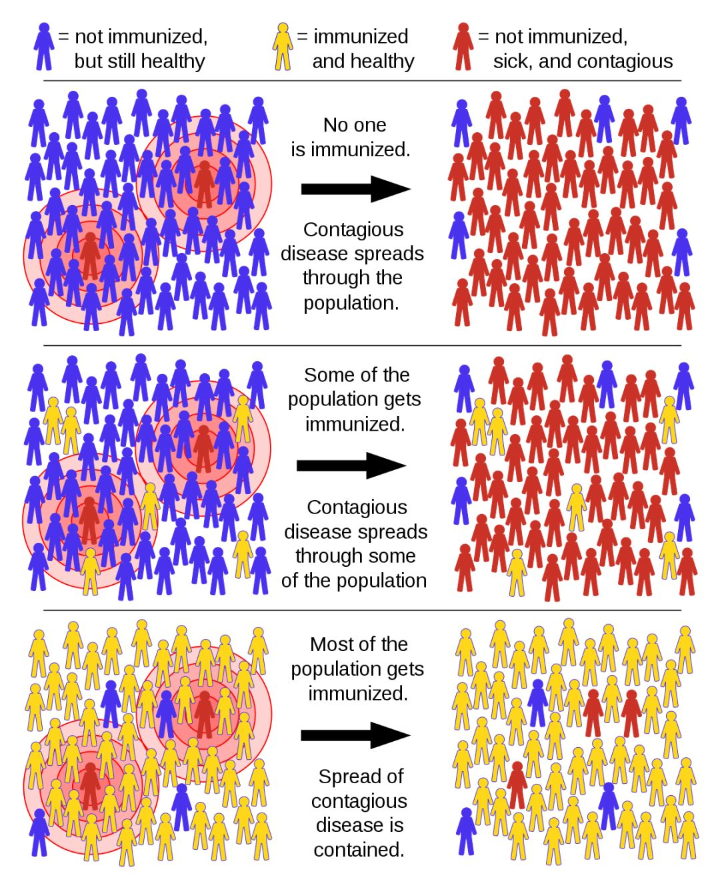
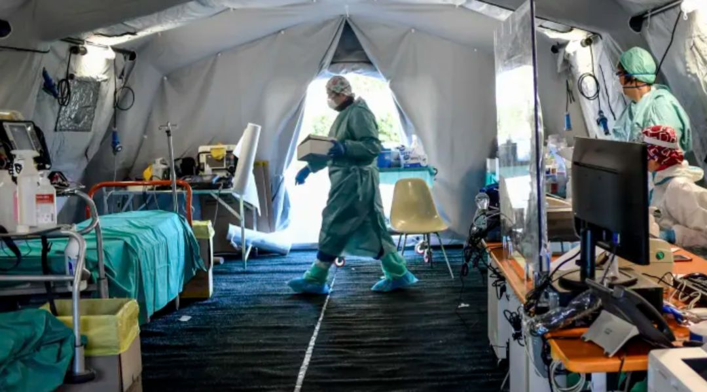

对抗疫情，特效药和疫苗不是唯一武器
原文链接 备份链接 疫情危机再一次提醒我们，在公共卫生方面，从政府、社会到公众，我们还有很多功课未能完成。 作者 | 朱纪明 程峰（清华大学医学院公共健康研究中心） 编辑 | 徐菁菁 药物和疫苗不一定“特效” 身在疫情中，大众的期待是特效 …

本 文 约 3700 字
阅 读 需 要
8 min
在本文的开头，首先有必要让读者明白，作者的讲述绝非完全可信。
我在意大利住了十多年，又是媒体记者，这次意大利疫情爆发以后，很多媒体都来找我，甚至有人愿意出丰厚的稿费，希望我讲述意大利的抗疫故事。
但我是否就对意大利的疫情拥有足够的了解？就好比你们每一个人，是否又对经历过的中国疫情拥有足够的了解？灾难发生的时候，人们总是希望在最短时间内有个大致性的了解，迫不及待想要建立一套简洁明了的理论，但我对这样的“解读消费”感到格外警惕。
新冠病毒能够造成如此巨大的危害，其威力并不完全在于其“毒性”，而在于它强大的伪装。或许这才是大灾难本身的特性。
除了声明我所写的并不完全可信，我还希望大家尽力放松心情——我的心情是放松的。刚从外面遛狗回来。我和两条狗每天上午和晚上分别出门一次。
上午，托斯卡纳3月的阳光无比灿烂，我在公园广场看到大约十来个人，彼此保持着至少十米距离。有两个常年在公园长椅上过夜的流浪汉，见我过来，很远就开始嚷嚷。
两条狗狗开始在枯树叶上拉屎，我对流浪汉说，你们真是百毒不侵，去年冬天到现在，我已经病过好几次了，而你们每天都在这里晒太阳。
“因为你不喝酒。”其中一人回答。
午夜再去公园广场，街上一个人也没有遇到，也没有车。流浪汉没有在长椅上过夜。
突然觉得，夜晚的佛罗伦萨很美。然而我却要写一篇十万火急的文章。
1
意大利的防疫灾难是如何形成的，我们首先需要了解意大利的公共医疗体系。
这次四川医疗专家团来意大利，谈到了30年前意大利援建四川急救中心、2008汶川大地震参与救援的往事。在很多人印象里，“意呆利”是个令人发笑的国家，意大利人总有太多浪漫不守规矩的举动。
宅在家中的意大利人开起了阳台音乐会，2020年3月14日
视频来源：Twitter@Gabriele Restivo
他们却不了解，尽管拥有不小的贫困地区和数量不少的贫困人口，意大利却是世界上最长寿的国家之一，他们的公共医疗水平在全世界也排前列，急救更是意大利的医学强项。
我身体还算健康，来意大利前几年对该国医疗体系接触不太多，却接触到另一个未曾想象的事情：无论去健身房还是参加业余球赛，都需要医学检查证明，根据运动类别还需要不同的证明，例如踢足球需要严格的心脏检查。
这是意大利医学界引以为豪的一项举措，可以最大限度避免运动猝死的发生，检查费用都是国家买单。
最近几年，家中添丁，我们终于对意大利的公共卫生和医院有了更多了解。像我们这样的外国人，正常纳税，自动就被归入他们的公共医疗体系，当地卫生部门把医保卡寄到家里。平时找家庭医生看病、做常规检查、买药产生的费用，可以在缴个税时冲抵。
遇到需要入院的情况，例如生小孩，或是前一段女儿生病，全程不需要花1分钱，而且手续、程序格外简单，签字都是护士把表格带到病房里。同时意大利医院还给病人提供可口的伙食，也是免费的。
公立医疗好不好？对于需要帮助的人，当然很好。医疗水平有保证，而且病人没有后顾之忧，不会治病治到一半因为钱不够被赶走。
在大流行病（Pandemic）面前，公立医疗和国民之间的关系却成为一个软肋。太多意大利人无所谓生小病，实在情况不妙，不就是往医院病床上一躺？
根据我的观察，这种心理倾向在疫情爆发后表现最明显。2月下旬隆巴底科多尼奥小镇刚“爆点”，立即出现了几个轻症自愈的患者，他们迫不及待地告诉公众，这病就是“小感冒”。而根据早期统计，轻症和无症占感染人数的80%，难怪意大利著名病毒学家吉斯蒙多也发出乌龙怪论，“就比流感厉害一点点”。

意大利病毒学家吉斯蒙多（Maria Rita Gismondo）曾宣称新冠病毒“就比流感厉害一点点”。
意大利经济严重依赖第三产业，“大号流感”论出来，当即得到很多政客站台，例如极右领导人萨尔维尼，他的党派在北部控制了多个地区。萨尔维尼在2月底几乎只会说一个词：“开！开！开！”——刚刚才拉响警报，立即又庆祝重新开业，米兰城甚至搞了“米兰不会停”主题派对庆祝。

#米兰不会停#（#Milanononsiferma）宣传短片
可以说，意大利北部成为重灾区，和这个地区经济最发达、人口最密集、医疗条件最好有一定关系。重症入院、轻症居家吃药，本身也是意大利公立医疗平时的做法，人们对医疗资源崩溃完全缺乏概念，更不知道新冠重症患者占用床位时间远超过其他一些急性病入院患者，丝毫不顾众多医学人士的大声反对和警告。
2
我是否为意大利的死亡率居高不下感到担心？我想提供截止到昨天的数据：意大利新冠平均死者年龄超过80岁，目前只有2个50岁以下的死者，其中1个正在治疗癌症，另1个是肥胖症和糖尿病患者。
同时，意大利人看似生性散漫，某些地方的脚踏实地却令人佩服，抗疫不是为了拿奖牌，死亡率相对其他地区更高，在意大利医学界看来，更多是统计方式的差异。
新冠病毒一个特点是容易激发体内其他慢性疾病，目前已知包括糖尿病、高血压、癫痫等病症。不少急病死者送到医院不久即已去世，意大利也会给死者测试纸，如果是阳性也纳入统计。对死者也严加检查，是因为医护人员在抢救一些肺炎症状不明显的病人时，并不一定采取全套高规格防护，如果死者是阳性，医护人员就需要回查流程并决定是否立即隔离。
根据病毒和流行病学专家们的研究，新冠肺炎1月下旬开始就在意大利流行了。意大利是最早宣布全国紧急状态的欧洲国家，为什么却没有更早查出？试想，如果提前一两周发现隆巴底的爆点，疫情控制效果是否会更好？
这个疑问有司法调查为根据。意大利的公立医疗水平高，和对流程的严厉控制有关系。疑似流程出错造成后果，就会自动引发司法调查。例如2年前佛罗伦萨队长阿斯托里在睡梦中死去，曾为他提供医学检查许可的医生便面临牢狱之灾，因为根据档案记录显示，阿斯托里心电图上有一部分异常，医生却忽略了。
这次意大利疫情最初的两个爆点——科多尼奥镇和沃镇的急救中心都被启动司法调查，结果显示，医生们并没有犯错。
既然老早宣布全国紧急状态，意大利政府其实知道新冠会传过来。但他们没有提高预警和监测标准，坚持应对传染性流行病的TOCC（Travel旅游，Office工作，Contact接触，Community社区）原则，要有接触史或旅行史才测试纸。这样可能就错过了比“1号病人”更早的病例，
“1号病人”得以现身，需要感谢科多尼奥急救中心一位女麻醉急救师的直觉，她当时有了强烈的怀疑，于是坚持追问病人家属，问出病人之前曾和一个中国回来的经理人吃过饭，这才有了测试纸的理由——意大利疫情终于浮出水面。

意大利1号病人行动轨迹 图源：澎湃
事实上，这位被当作“0号病人”的经理人是阴性，而且也没有抗体，不是传播者。根据病毒学家们的研究，意大利的病毒是从德国巴伐利亚传过来的。也就是说，巴伐利亚最早发生欧洲人传人的疫情之后，尽管德国人立即采取了严厉的措施，但传播早就开始了。
3
大约一周以前，在法国、葡萄牙、西班牙疫情初现的时候，我突然冒出一个感觉：在不远的将来，意大利将逐渐被遗忘。这些国家将抢占新冠疫情的头条。然而约翰逊还是够猛，他的“牧群免疫”理论将是未来几周甚至几个月世界舆论激辩的重点。

牧群免疫（herd immunity）示意图

2020年3月12日，英国首相鲍里斯·约翰逊（Boris Johnson）宣布英国进入抗疫第二阶段“延缓”（Delay) 图源：AFP
意大利医学界对英国的做法反应非常激烈，有人直接指出这是一种野蛮行为。
中国网络对意大利防疫的一个批评，是说意大利医院任由老人自生自灭见死不救。这是误解。
意大利每天会公布一个完整的各大区疫情数据，有兴趣的朋友可以自行计算，意大利的入院率是很高的。同时，意大利防疫有点像意大利足球的防守，险象环生却总是能找到出路。例如用直升机在各大区甚至全国范围内转移重症患者，合理调配现有重症病床存量，最远甚至有患者从北部疫区贝尔加莫运到南部西西里岛的巴勒莫。

现在距离意大利疫情爆发已经过去快1个月时间。在最严重的隆巴底大区，医院仍然在开辟新的重症病床，同时并未因为新冠疫情停止对其他病患的救治。不得不说，意大利人其实做得不错。

意大利北部布雷西亚一家医院临时加设的急诊病房 图源：Claudio Furlan / LaPresse / AP
那么，抛弃老人的谣言又是如何形成的呢？
可以肯定地说，如果意大利政府或是下属部门要求医院优先救治年轻人，他们会立即在民愤中被迫辞职。事实并非如此。
这个谣言的根据，是意大利麻醉/急救师协会给成员的一份疫情期间的指导意见，建议可以对病人进行选择，不必严守先到先治的顺序，而是优先考虑急救预期和救活以后病人的存活期。
指导意见并不来自政府机构，也不来自医院，而是专业人士的行业协会；指导意见也不是法令，目的只是在疫情爆发、工作高强度的背景中，保证急救的效率和急救师自身的心理状态。一位急救师就讲述过，一些新手往往情绪容易出现波动，实际上，平时的急救同样会有类似的原则，急救不是无限度使用医疗资源和手段去寻找“奇迹”。
米兰萨科医院是收治新冠病人最多的专业医院之一，这里的负责人加利医生表示，不存在挑选病人的说法，“放弃病人”则纯属医学操作，“例如，一位病人遭遇多种基础性疾病并发，这种情况下你朝任何一个方向去抢救都是错”。
加利医生（Massimo Galli）于2020年3月3日在米兰接受关于疫情的采访
AFP via Getty Images, FILE
4
最后让我们聊一些让人看到希望的内容。
中国医学界对意大利分享了托珠单抗有助于抑制新冠肺炎的研究成果。意大利医院的临床试验效果非常好，托珠单抗有望立即进入意大利全国新冠医疗方案。
意大利此前就已经试验过的瑞德西韦，对于抗病毒也得到很好的临床反馈。
现在真正缺少的，是一种可以保证多数轻症患者服用以后不转为重症的药物。只有这种药物被找到，人类生活才会恢复常态，新冠正式变成一种流感。
亲爱的读者，请原谅，作者忍不住又对医学不懂装懂了起来……
原文链接 备份链接 疫情危机再一次提醒我们，在公共卫生方面，从政府、社会到公众，我们还有很多功课未能完成。 作者 | 朱纪明 程峰（清华大学医学院公共健康研究中心） 编辑 | 徐菁菁 药物和疫苗不一定“特效” 身在疫情中，大众的期待是特效 …
原文链接 备份链接 3月21日。 封城第59天。这么长时间了！ 昨天那么大的太阳，今天突然就阴了。下午还下了点雨。这时节的春雨，对于院子里的树以及花，都还是很需要的。前两三天，武大樱花盛开，树下空荡无人，估计是记者拍了一些照片，同学群里便 …
原文链接 备份链接 应广大网友们呼吁，今天小编又给大家准备了想看的分析内容。国内新增期待完全归零。美国疫情蔓延日益严重，正在加速进入受关注名单。欧洲多国加强管控措施 文 | 《财经》数据研究员徐进 图 | 《财经》视觉中心 编辑 | 郝 …
原文链接 备份链接 一些看似忽然病情恶化的病人，实际上是经历过一段时间的慢性缺氧。部分年轻人的缺氧状态很难被觉察。 早期各大医院对新冠病毒并不了解，认为呼吸科、急诊科和感染科的医生足矣，并不清楚它对人体其它器官的危害。 ICU医生则 …
原文链接 备份链接 根据当地时间3月8日18时意大利卫生部公布的最新数据，意大利现有新冠病毒患者6387例，死亡366例，治愈622例，累计确诊感染新冠病毒总人数为7375例，较3月7日18时新增1492例，新增133例死亡病例。 据外 …